Linear layout using the Layout Editor
| Hard Prerequisites |
|
| Soft Prerequisites |
|
To submit this project follow the link below: TILDE
Task 1: Create the AboutMe Project
1 - Open Android Studio, if it’s not already open.
2 - If a project is already open in Android Studio, select File > New > New Project.
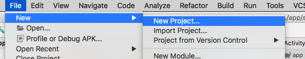
3 - If a project is not already open, select + Start a new Android Studio project in the Welcome to Android Studio dialog.
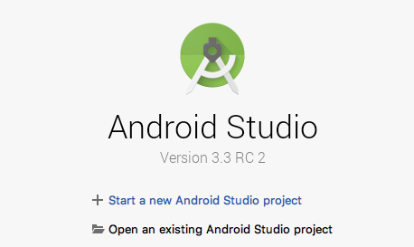
4 - In the Create New Project dialog, in the Phone and Tablet tab, select the Empty Activity template. Click Next.
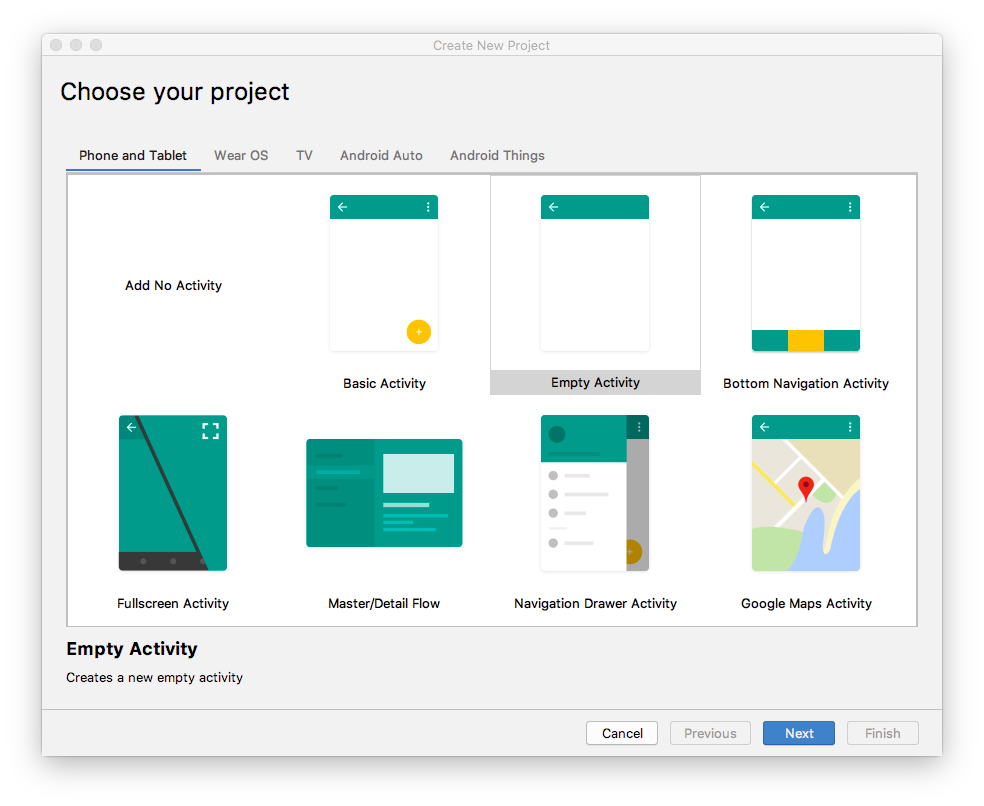
5 - In the next Create New Project dialog, set the following parameters and click Finish.
Use this details below as a guideline and not the actual data for your settings: 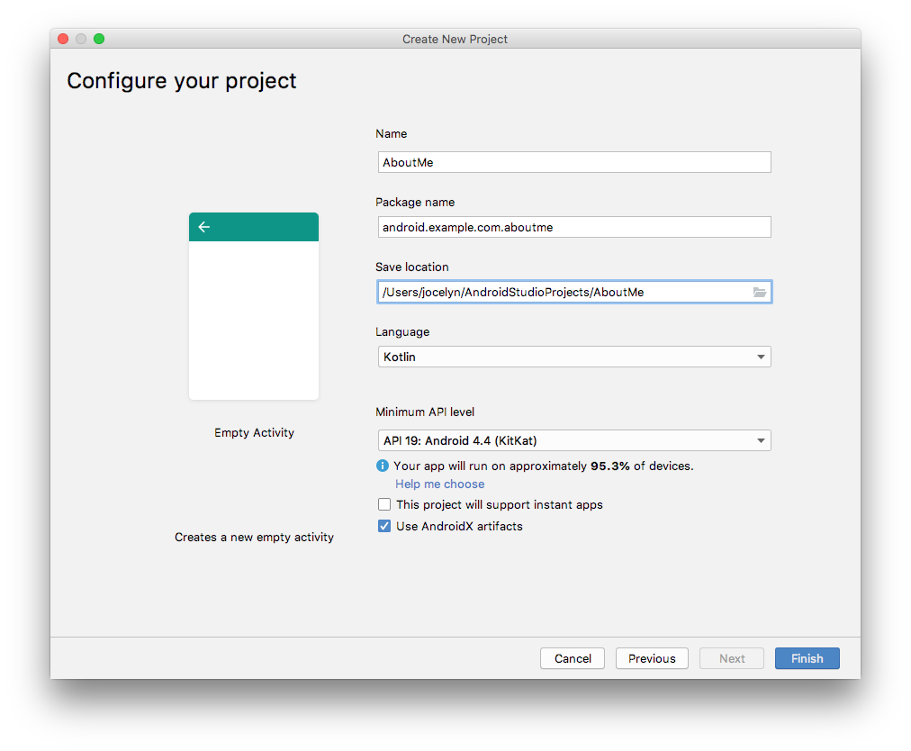
Android Studio will take a moment to generate the project files.
6 - Run your app. You will see the string “Hello World” on the blank screen
The Empty Activity template creates a single empty activity, Mainactivity.kt. The template also creates a layout file called activity_main.xml. The layout file has ConstraintLayout as its root ViewGroup, and it has a single TextView as its content.
Task 2 : Change the root layout to use LinearLayout
In this task, you change the generated root ViewGroup to a LinearLayout. You also arrange the UI elements vertically.
View groups A ViewGroup is a view that can contain child views, which are other views and view groups. Views that make up a layout are organized as a hierarchy of views with a view group as the root.
In a LinearLayout view group, the UI elements are arranged either horizontally or vertically.

Change the root layout so that it uses a LinearLayout view group:
- Select the Project > Android pane. In the app/res/layout folder, open the activity_main.xml file.
- Select the Text tab and change the root view group from ConstraintLayout to LinearLayout.
- Remove the TextView. In the LinearLayout element, add the android:orientation attribute and set it to vertical.
Before:
<androidx.constraintlayout.widget.ConstraintLayout xmlns:android="http://schemas.android.com/apk/res/android"
xmlns:app="http://schemas.android.com/apk/res-auto"
xmlns:tools="http://schemas.android.com/tools"
android:layout_width="match_parent"
android:layout_height="match_parent"
tools:context=".MainActivity">
<TextView
android:layout_width="wrap_content"
android:layout_height="wrap_content"
android:text="Hello World!"
app:layout_constraintBottom_toBottomOf="parent"
app:layout_constraintLeft_toLeftOf="parent"
app:layout_constraintRight_toRightOf="parent"
app:layout_constraintTop_toTopOf="parent" />
</androidx.constraintlayout.widget.ConstraintLayout>
After:
<LinearLayout
xmlns:android="http://schemas.android.com/apk/res/android"
xmlns:tools="http://schemas.android.com/tools"
xmlns:app="http://schemas.android.com/apk/res-auto"
android:layout_width="match_parent"
android:layout_height="match_parent"
android:orientation="vertical"
tools:context=".MainActivity">
</LinearLayout>
Back
After:
<LinearLayout
xmlns:android="http://schemas.android.com/apk/res/android"
xmlns:tools="http://schemas.android.com/tools"
xmlns:app="http://schemas.android.com/apk/res-auto"
android:layout_width="match_parent"
android:layout_height="match_parent"
android:orientation="vertical"
tools:context=".MainActivity">
</LinearLayout>
Task 3 : Add a TextView using Layout Editor
The Layout Editor is a visual-design tool inside Android Studio. Instead of writing XML code by hand to build your app’s layout, you can use the Layout Editor to drag UI elements into the design editor.
To see the Layout Editor, click the Design tab. The screenshot below shows the parts of the Layout Editor.
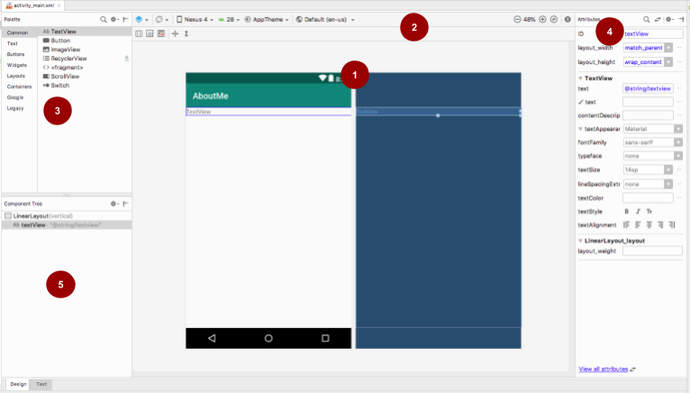
Key
1 - Design editor: Displays a visual representation of your screen layout in design view, blueprint view, or both. The design editor is the main part of the Layout Editor.
2 - Toolbar: Provides buttons to configure your layout’s appearance in the design editor, and to change some layout attributes. For example, to change the display of your layout in the design editor, use the Select Design Surface drop-down menu:
- Use Design for a real-world preview of your layout.
- Use Blueprint to see only outlines for each view.
- Use Design + Blueprint to see both displays side by side.
3 - Palette: Provides a list of views and view groups that you can drag into your layout or into the Component Tree pane.
4 - Attributes: Shows attributes for the currently selected view or view group. To toggle between a complete list of attributes and commonly used attributes, use the icon at the top of the pane.
5 - Component Tree: Displays the layout hierarchy as a tree of views. The Component Tree is useful when you have small, hidden, or overlapping views that you could not otherwise select in the design editor.
Step 1: Add a TextView
1 - Open the res/layout/activity_main.xml file, if it’s not already open.
2 - Switch to the Text tab and inspect the code. The code has a LinearLayout as its root view group. (View groups are views that contain other views.)
The LinearLayout has the required attributes layout_height, layout_width, and orientation, which is vertical by default.
3 - Switch to the Design tab to open the Layout Editor.
*Note: The Design tab and the Text tab shows the same layout, just in a different way. Changes you make in one tab are reflected in the other.*
4 - Drag a text view from the Palette pane onto the design editor.
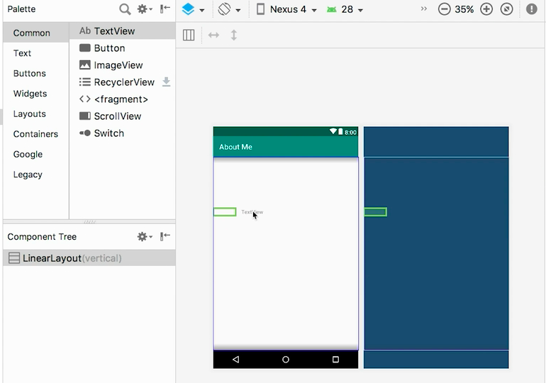
5 - Notice the Component Tree pane. The new text view is placed as a child element of the parent view group, which is the LinearLayout.
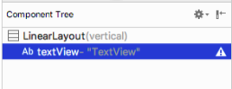
6 - Open the Attributes pane, if it’s not open already. (To open the pane, double-click the newly added TextView in the design editor.)
7 - Set the following attributes in the Attributes pane:
| Attribute | Value |
|---|---|
| ID | name_text |
| text | Set it to your name. (One of the text fields shows a wrench icon to indicate that it’s for the tools namespace. The one without the wrench is for the android namespace—this is the text field you want.) |
| textAppearance > textSize | 20sp |
| textAppearance > textColor | @android:color/black |
| textAppearance > textAlignment | Center |
Step 2: Create a string resource
In the Component Tree, next to the TextView, you will notice a warning icon . To see the warning text, click the icon or point to it, as shown in the screenshot below.
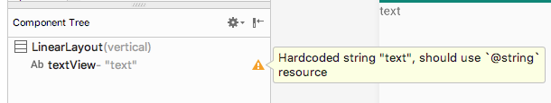
To resolve the warning, create a string resource:
1 - In the Attributes pane, click the three dots next to the text attribute that you set to your name. The resource editor opens.
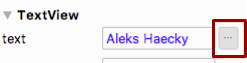
2 - In the Resources dialog, select Add new resource > New string Value.
3 - In the New String Value Resource dialog, set the Resource name field to name. Set the Resource value field to your own name. Click OK. Notice that the warning is gone.
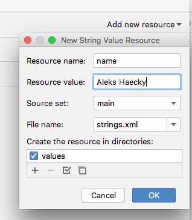
4 - Open the res/values/strings.xml file and look for the newly created string resource called name.
<string name="name">Aleks Haecky</string>
Step 3: Create a dimension resource
You just added a resource using the resource editor. You can also extract resources in the XML code editor to create new resources:
In the
activity_main.xmlfile, switch to the *Text tab.On the
textSizeline, click on the number (20sp) and typeAlt+Enter(Option+Enteron a Mac). Select Extract dimension resource from the popup menu.In the Extract Resource dialog, enter
text_sizein the Resource name field. Click OK.
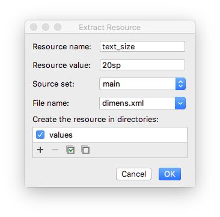
4 - Open the res/values/dimens.xml file to see the following generated code:
<dimen name="text_size">20sp</dimen>
Note: If the dimens.xml file was not already present inside your res/values folder, Android Studio creates it.
5 - Open MainActivity.kt file, and look for the following code at the end of the onCreate() function:
setContentView(R.layout.activity_main)
The setContentView() function connects the layout file with the Activity. The specified layout resource file is R.layout.activity_main:
Ris a reference to the resource. It is an auto-generated class with definitions for all the resources in your app.layout.activity_mainindicates that the resource is a layout namedactivity_main.
6 - Run your app. A TextView with your name is displayed.
Task 4 : Style your TextView
When you look at your app screen, your name is pushed up against the top of the screen, so now you add padding and a margin.
Padding versus margin
Padding is the space inside the boundaries of a view or element. It is the space between the edges of the view and the view’s content, as shown in the figure below.
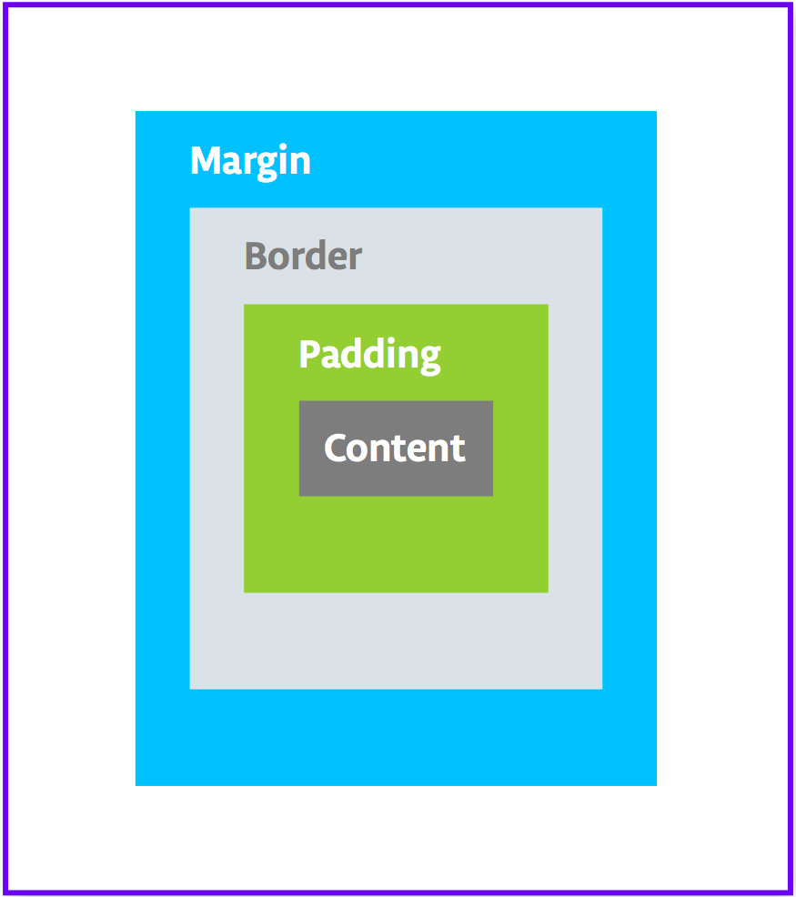
A view’s size includes its padding. The following are commonly used padding attributes:
- android:padding specifies padding for all four edges of the view.
- android:paddingTop specifies padding for the top edge.
- android:paddingBottom specifies padding for the bottom edge.
- android:paddingStart specifies padding for the “starting” edge of the view.
- android:paddingEnd specifies padding for the “ending” edge of the view.
- android:paddingLeft specifies padding for the left edge.
- android:paddingRight specifies padding for the right edge.
Margin is the space added outside of the view’s borders. It is the space from the edge of the view to its parent, as shown in the figure above. The following are commonly used margin attributes:
- android:layout_margin specifies a margin for all four sides of the view.
- android:layout_marginBottom specifies space outside the bottom side of this view.
- android:layout_marginStart specifies space outside the “starting” side of this view.
- android:layout_marginEnd specifies space on the end side of this view.
- android:layout_marginLeft specifies space on the left side of this view.
- android:layout_marginRight specifies space on the right side of this view.
Right/left versus start/end
"Right" and "left" always refer to the right and left sides of the screen, whether your app uses a left-to-right (LTR) flow or a right-to-left (RTL) flow. "Start" and "end" always refer to the start and end of the flow:
For a LTR flow, start = left and end=right.
For a RTL flow, start=right and end=left.
If your app targets API level 17 (Android 4.2) or higher:
Use "start" and "end" instead of "left" and "right".
For example, android:layout_marginLeft should become android:layout_marginStart to support RTL languages.
If you want your app to work with versions lower than Android 4.2; that is, if the app's targetSdkVersion or minSdkVersion is 16 or lower:
Add "start" and end" in addition to "left" and "right".
For example, use both android:paddingLeft and android:paddingStart.
Step 1: Add padding
To put space between your name and the top edge of the name text view, add top padding.
Open
activity_main.xmlfile in the Design tab.In the Component Tree or in the design editor, click the text view to open its Attributes pane.
At the top of the Attributes pane, click the double-arrow icon to see all the available attributes.
Search for Padding, expand it, and click the three dots … next to the top attribute. The Resources dialog appears.
In the Resources dialog, select Add new resource > New dimen Value.
In the New Dimension Value Resource dialog, create a new
dimenresource calledsmall_paddingwith a value of8dp.
The dp abbreviation stands for density-independent. If you want a UI element to look the same size on screens with different densities, use dp as your unit of measurement. When specifying text size, however, always use sp (scalable pixels). Click OK.
Step 2: Add a margin
To move the name text view away from the edge of the parent element, add a top margin.
In the Attributes pane, search for “margin” to find Layout_Margin.
Expand Layout_Margin, and click the three dots … next to the top attribute.
Create a new dimen resource called layout_margin and make it 16dp. Click OK.
Step 3: Add a font
To make the name text view look better, use the Android Roboto font. This font is part of the support library, and you add the font as a resource.
In the Attributes pane, search for “fontFamily”.
In the fontFamily field, click the drop-down arrow, scroll to the bottom of the list, and select More Fonts.
In the Resources dialog, search for
roband choose Roboto. In the Preview list, select Regular.Select the Add font to project radio button.
Click OK.
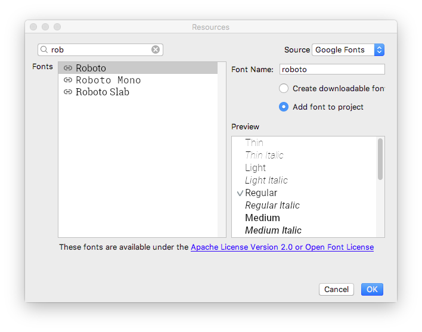
The res folder now has a font folder that contains a roboto.ttf font file. The @font/roboto attribute is added to your TextView.
Step 4: Extract the style
A style is a collection of attributes that specify the appearance and format for a view. A style can include font color, font size, background color, padding, margin, and other common attributes.
You can extract the name text view’s formatting into a style and reuse the style for any number of views in your app. Reusing a style gives your app a consistent look when you have multiple views. Using styles also allows you to keep these common attributes in one location.
1 - Right-click the TextView in the Component Tree and select Refactor > Extract Style.
2 - In the Extract Android Style dialog, clear the layout_width checkbox, the layout_height checkbox, and the textAlignment checkbox. These attributes are usually different for each view, so you don’t want them to be part of the style.
3 - In the Style name field, enter NameStyle.
4 - Click OK.
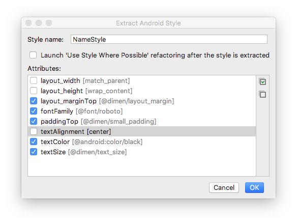
5 - A style is also a resource, so the style is saved in the res/values/ folder in a styles.xml file. Open styles.xml and examine the generated code for the NameStyle style, which will look similar to this:
<style name="NameStyle">
<item name="android:layout_marginTop">@dimen/layout_margin</item>
<item name="android:fontFamily">@font/roboto</item>
<item name="android:paddingTop">@dimen/small_padding</item>
<item name="android:textColor">@android:color/black</item>
<item name="android:textSize">@dimen/text_size</item>
</style>
6 - Open activity_main.xml and switch to the Text tab. Notice that the generated style is being used in the text view as style="@style/NameStyle".
7 - Run the app and notice the changes in the font and the padding around your TextView.
Task 5 : Add an ImageView
Most real-world Android apps consist of a combination of views to display images, display text, and accept input from the user in the form of text or click events. In this task, you add a view to display an image.
An ImageView is a view for displaying image resources. For example, an ImageView can display Bitmap resources such as PNG, JPG, GIF, or WebP files, or it can display a Drawable resource such as a vector drawing.
There are image resources that come with Android, such as sample icons, avatars, and backgrounds. You will add one of these resources to your app.
1 - Display the layout file In the Design tab, then drag an ImageView from the Palette pane to below name_text in the Component Tree. The Resources dialog opens.
2 - Select Drawable if it’s not already selected.
3 - Expand android, scroll, and select btn_star_big_on. It’s the yellow star .
4 - Click OK.
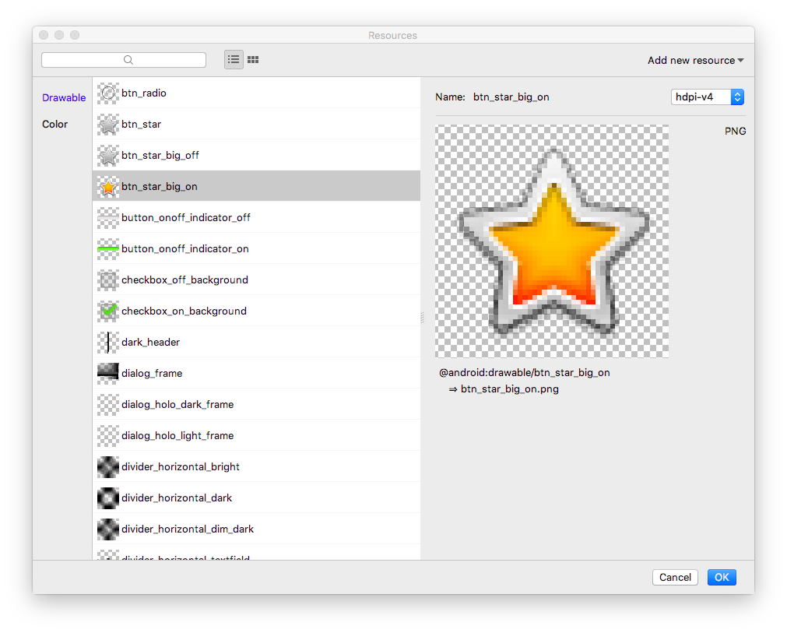
The star image is added to the layout below your name. Because you have a vertical LinearLayout, views you add are vertically aligned.
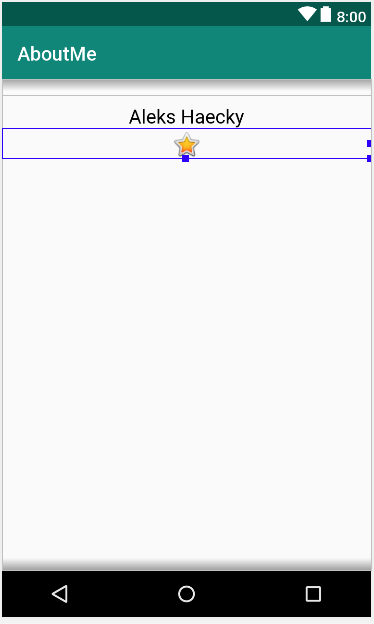
5 - Switch to the Text tab and look at the generated ImageView code. The width is set to match_parent, so the view will be as wide as its parent element. The height is set to wrap_content, so the view will be as tall as its content. The ImageView references the btn_star_big_on drawable.
<ImageView
android:id="@+id/imageView"
android:layout_width="match_parent"
android:layout_height="wrap_content"
app:srcCompat="@android:drawable/btn_star_big_on" />
8 - To rename the id of the ImageView, right-click on ”@+id/imageView” and select Refactor > Rename.
7 - In the Rename dialog, set the id to @+id/star_image. Click Refactor.
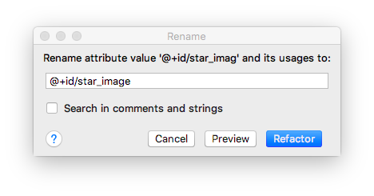
Tip: Refactor > Rename renames all the occurrences of an attribute or variable name in your app project.
8 - In the Design tab, in the Component Tree, click the warning icon next to star_image. The warning is for a missing contentDescription, which screen readers use to describe images to the user.
9 - In the Attributes pane, click the three dots … next to the contentDescription attribute. The Resources dialog opens.
10 - In the Resources dialog, select Add new resource > New string Value. Set the Resource name field to yellow_star, and set the Resource value field to Yellow star. Click OK.
11 - Use the Attributes pane to add a top margin of 16dp (which is @dimen/layout_margin) to the yellow_star, to separate the star image from the name.
12 - Run your app. Your name and the star image are displayed in your app’s UI.
Task 5 : Add a ScrollView
A ScrollView is a view group that allows the view hierarchy placed within it to be scrolled. A scroll view can contain only one other view, or view group, as a child. The child view is commonly a LinearLayout. Inside a LinearLayout, you can add other views.
The following image shows an example of a ScrollView that contains a LinearLayout that contains several other views.
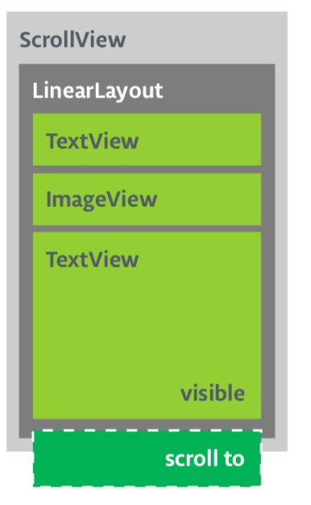
In this task, you will add a ScrollView that allows the user to scroll a text view that displays a brief biography. If you are only making one view scrollable, you can put the view directly into the ScrollView, which is what you do in this task.
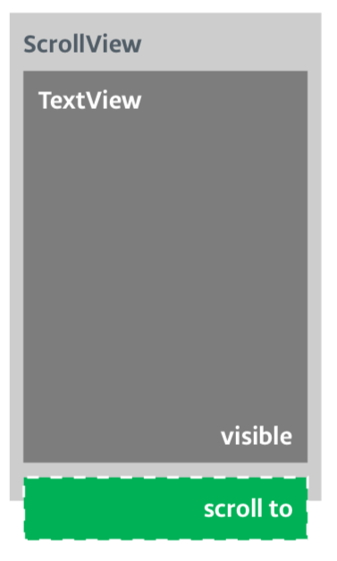
Step 1: Add a ScrollView that contains a TextView
1 - Open the activity_main.xml file in the Design tab.
2 - Drag a scroll view into the layout by dragging it into the design editor, or into the Component Tree. Put the scroll view below the star image.
3 - Switch to the Text tab to inspect the generated code.
// Auto generated code
<ScrollView
android:layout_width="match_parent"
android:layout_height="match_parent">
<LinearLayout
android:layout_width="match_parent"
android:layout_height="wrap_content"
android:orientation="vertical" />
</ScrollView>
The height and width of the ScrollView match the parent element. Once the name_text text view and the star_image image view have used enough vertical space to display their contents, the Android system lays out the ScrollView to fill the rest of the available space on the screen.
4 - Add an id to the ScrollView and call it bio_scroll. Adding an id to the ScrollView gives the Android system a handle for the view so that when the user rotates the device, the system preserves the scroll position.
5 - Inside the ScrollView, remove the LinearLayout code, because your app will only have one view that’s scrollable—a TextView.
6 - Drag a TextView from the Palette to the Component Tree. Put the TextView under the bio_scroll, as a child element of bio_scroll.
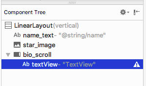
7 - Set the id of the new text view to bio_text.
8 - Next you add a style for the new text view. In the Attributes pane, click the three dots … next to the style attribute to open the Resources dialog.
9 - In the Resources dialog, search for NameStyle. Select NameStyle from the list, and click OK. The text view now uses the NameStyle style, which you created in a prior task.
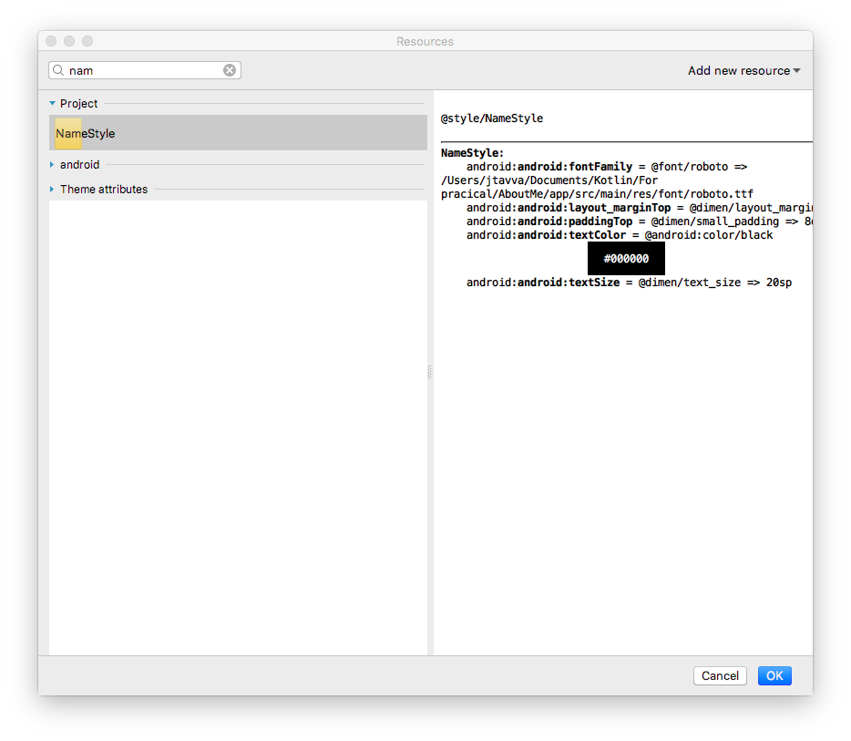
Step 2: Add your biography to the new TextView
Open strings.xml, create a string resource called bio, and put in some long text about yourself, or about anything that you want.
Use \n to indicate a line break. If you use an apostrophe, you must escape it with a backslash. For example: “You mustn\’t forget the backslash.” For bold text use …, and for italicized text use …. For example: “This text is bold and this text is italics.”
Here is a sample biography:
<string name="bio">Hi, my name is Aleks.
\n\nI love fish.
\n\nThe kind that is alive and swims around in an aquarium or river, or a lake, and definitely the ocean.
\nFun fact is that I have several aquariums and also a river.
\n\nI like eating fish, too. Raw fish. Grilled fish. Smoked fish. Poached fish - not so much.
\nAnd sometimes I even go fishing.
\nAnd even less sometimes, I actually catch something.
\n\nOnce, when I was camping in Canada, and very hungry, I even caught a large salmon with my hands.
\n\nI\'ll be happy to teach you how to make your own aquarium.
\nYou should ask someone else about fishing, though.\n\n</string>
2 - In the bio_text text view, set the value of the text attribute to the bio string resource that contains your biography.
3 - To make the bio_text text easier to read, add spacing between the lines. Use the lineSpacingMultiplier attribute, and give it a value of 1.2.
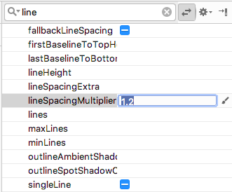
Notice how in the design editor, the bio text runs all the way to the side edges of the screen. To fix this problem, you can add left, start, right, and end padding attributes to the root LinearLayout. You do not need to add bottom padding, because text that runs right up to the bottom signals to the user that the text is scrollable.
4 - Add start and end padding of 16dp to the root LinearLayout.
5 - Switch to the Text tab, extract the dimension resource, and name it layout_padding.
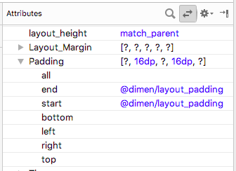
Note: Starting from API level 17, use “start” and “end” instead of “left” and “right” for padding and margin to adapt your app for RTL languages like Arabic.
6 - Run your app and scroll through the text.